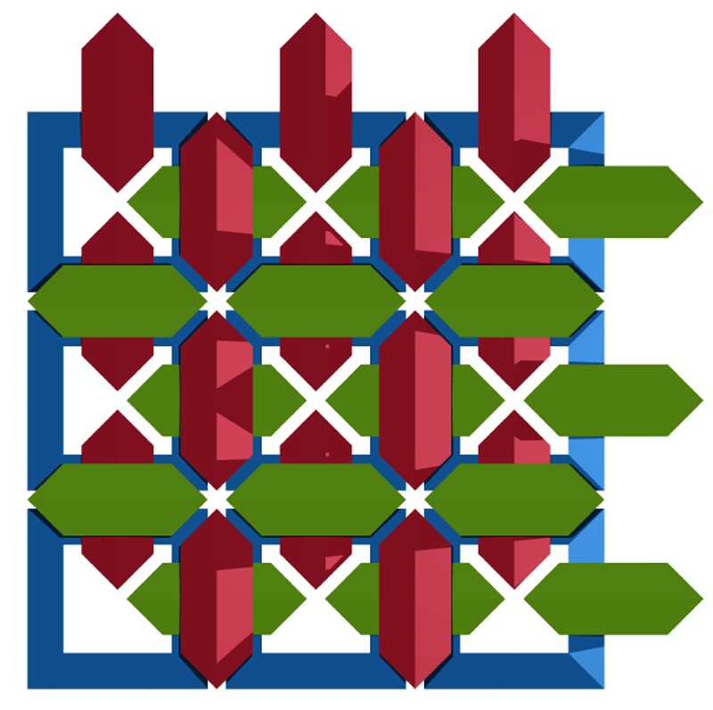

ChainmailWritten by Paul BourkeOctober 2011
3D printed
3D ChainmailWritten by Paul Bourke, inspired by John ShierJanuary 2014 Protective armour for a 4 dimensional knight.
The following are some experiments in one way of tiling space with equal sized interlocking tori proposed by John Shier. The result forms a chainmail in 3 dimensions. The graphics here were created parametrically and rendered using PovRay (sample scene files provided), they were mainly intended to verify the expected tiling and other properties. The basic tiling structure can be seen in the 3x3x1 unit below, the blue tori lie on a single plane and the green and red planes are orthogonal and at different height depending on whether it is an even or odd row/column.
The following is a 3x3x3 tile with thinner rings so one can see into the interior easier. Note that two red and green rings pass through every blue ring, two blue and green rings pass through every red ring, and two red and blue rings pass through every green ring.
3x3x3 tile with rings of maximum thickness, that is, the two green and red rings that pass though the hole of a blue ring touch each other. PovRay scene file: rings.pov. 
9x9x9 tile with maximum, touching rings.
For the most dense tilings the red, green and blue rings are all mutually touching (kissing) each other. If r is the radius of the ring tube then R, the radius from the center of the ring to the center of the ring tube, is given by
And the tiling spacing is given by
Orthographic projection from the z axis, not for the maximally dense case hence the gap between the red and green tori.
A more dense packing can be achieved by using octahedrons with the center cut out with a cube. The right angles of the resulting square tori allow them to fill in the gaps in the middle of the rings. The next two cases have increasing size of the cut out cube. The maximum cube size is 0.5.
If the octahedron is of width 1 then the ring spacing for maximum packing is 2, the examples above and the next example have a slightly wider spacing. PovRay scene file: octa.pov
The following 4x4x4 tile is the maximum packing case, cube hole is of width 0.5 and the tile spacing is 2.
Cube hole size of 0.75 and tile spacing 2.
Orthographic projection with a cube hole size of 0.65. 
A variation on the above is to cut cylinders out of the octahedrons instead of cubes, resulting is a rather low density packing.
|
{kind=link}
{kind=link}